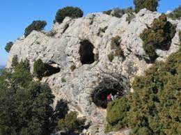
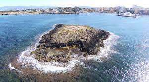

|
Balma de Son Matge |
 |
Castell de Santueri |
 |
Cova de sa conillera de s'Àguila |
 |
Cova de Canet |
|  | Cova de Muleta |
 |
Dolmen de s'Aigua Dolça |
 |
Dolmen de Son Bauló de Dalt |
 |
Dolmen de Son Real |
|  | Illot de Sa Galera |
 |
Necròpolis de Son Pellisser |
 |
Necroòpolis de Son Sunyer |
| Es Catellàs des Caparrot de Forma | |
| Hipogeu de Torre del Ram | |
| Naveta de Biniac Oriental | |
| Naveta des Tudons | |
| Necròpolis de Cala Morell | |
| Es Castellet de Pop Mosquer | |
| Poblat de Cala Morell | |
| Poblat de Son Mercer de Baix | |
| Dolmen de Ses Roquelles | |
| Sepulcre de Son Olivaret | |
| So na Caçana | |
| Torre d'en Galmés |